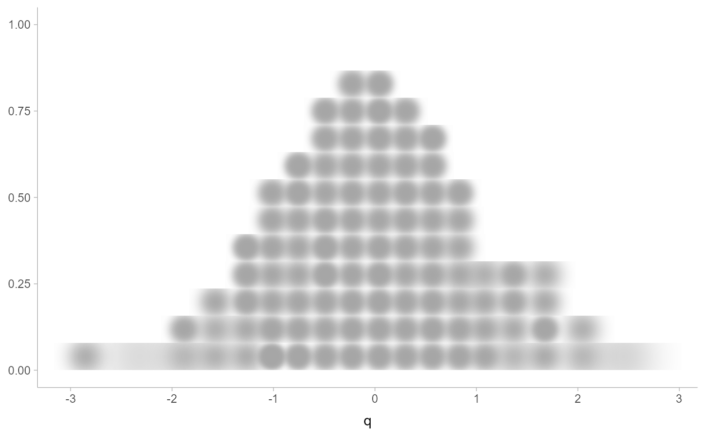
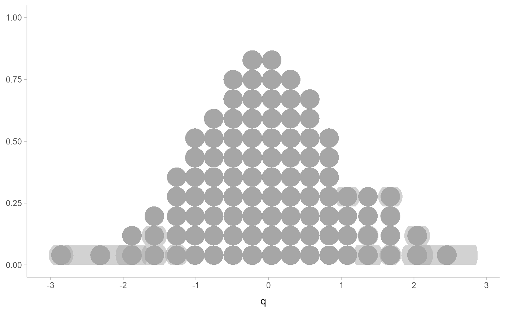

Variant of geom_dots() for creating blurry dotplots. Accepts an sd
aesthetic that gives the standard deviation of the blur applied to the dots.
Requires a graphics engine supporting radial gradients. Unlike geom_dots(),
all dots must be circular, so this geom does not support the shape aesthetic.
Usage
geom_blur_dots(
mapping = NULL,
data = NULL,
stat = "identity",
position = "identity",
...,
blur = "gaussian",
binwidth = NA,
dotsize = 1.07,
stackratio = 1,
layout = "bin",
overlaps = "nudge",
smooth = "none",
overflow = "keep",
verbose = FALSE,
orientation = NA,
subguide = "none",
na.rm = FALSE,
show.legend = NA,
inherit.aes = TRUE
)Arguments
- mapping
Set of aesthetic mappings created by
aes(). If specified andinherit.aes = TRUE(the default), it is combined with the default mapping at the top level of the plot. You must supplymappingif there is no plot mapping.- data
The data to be displayed in this layer. There are three options:
If
NULL, the default, the data is inherited from the plot data as specified in the call toggplot().A
data.frame, or other object, will override the plot data. All objects will be fortified to produce a data frame. Seefortify()for which variables will be created.A
functionwill be called with a single argument, the plot data. The return value must be adata.frame, and will be used as the layer data. Afunctioncan be created from aformula(e.g.~ head(.x, 10)).- stat
The statistical transformation to use on the data for this layer, either as a
ggprotoGeomsubclass or as a string naming the stat stripped of thestat_prefix (e.g."count"rather than"stat_count")- position
Position adjustment, either as a string, or the result of a call to a position adjustment function. Setting this equal to
"dodge"(position_dodge()) or"dodgejust"(position_dodgejust()) can be useful if you have overlapping geometries.- ...
Other arguments passed to
layer(). These are often aesthetics, used to set an aesthetic to a fixed value, likecolour = "red"orlinewidth = 3(see Aesthetics, below). They may also be parameters to the paired geom/stat.- blur
Blur function to apply to dots. One of:
A function that takes a numeric vector of distances from the dot center, the dot radius, and the standard deviation of the blur and returns a vector of opacities in \([0, 1]\), such as
blur_gaussian()orblur_interval().A string indicating what blur function to use, as the suffix to a function name starting with
blur_; e.g."gaussian"(the default) appliesblur_gaussian().
- binwidth
The bin width to use for laying out the dots. One of:
NA(the default): Dynamically select the bin width based on the size of the plot when drawn. This will pick abinwidthsuch that the tallest stack of dots is at mostscalein height (ideally exactlyscalein height, though this is not guaranteed).A length-1 (scalar) numeric or unit object giving the exact bin width.
A length-2 (vector) numeric or unit object giving the minimum and maximum desired bin width. The bin width will be dynamically selected within these bounds.
If the value is numeric, it is assumed to be in units of data. The bin width (or its bounds) can also be specified using
unit(), which may be useful if it is desired that the dots be a certain point size or a certain percentage of the width/height of the viewport. For example,unit(0.1, "npc")would make dots that are exactly 10% of the viewport size along whichever dimension the dotplot is drawn;unit(c(0, 0.1), "npc")would make dots that are at most 10% of the viewport size (while still ensuring the tallest stack is less than or equal toscale).- dotsize
The width of the dots relative to the
binwidth. The default,1.07, makes dots be just a bit wider than the bin width, which is a manually-tuned parameter that tends to work well with the default circular shape, preventing gaps between bins from appearing to be too large visually (as might arise from dots being precisely thebinwidth). If it is desired to have dots be precisely thebinwidth, setdotsize = 1.- stackratio
The distance between the center of the dots in the same stack relative to the dot height. The default,
1, makes dots in the same stack just touch each other.- layout
The layout method used for the dots:
"bin"(default): places dots on the off-axis at the midpoint of their bins as in the classic Wilkinson dotplot. This maintains the alignment of rows and columns in the dotplot. This layout is slightly different from the classic Wilkinson algorithm in that: (1) it nudges bins slightly to avoid overlapping bins and (2) if the input data are symmetrical it will return a symmetrical layout."weave": uses the same basic binning approach of"bin", but places dots in the off-axis at their actual positions (unlessoverlaps = "nudge", in which case overlaps may be nudged out of the way). This maintains the alignment of rows but does not align dots within columns."hex": uses the same basic binning approach of"bin", but alternates placing dots+ binwidth/4or- binwidth/4in the off-axis from the bin center. This allows hexagonal packing by setting astackratioless than 1 (something like0.9tends to work)."swarm": uses the"compactswarm"layout frombeeswarm::beeswarm(). Does not maintain alignment of rows or columns, but can be more compact and neat looking, especially for sample data (as opposed to quantile dotplots of theoretical distributions, which may look better with"bin","weave", or"hex")."bar": for discrete distributions, lays out duplicate values in rectangular bars.
- overlaps
How to handle overlapping dots or bins in the
"bin","weave", and"hex"layouts (dots never overlap in the"swarm"or"bar"layouts). For the purposes of this argument, dots are only considered to be overlapping if they would be overlapping whendotsize = 1andstackratio = 1; i.e. if you set those arguments to other values, overlaps may still occur. One of:"keep": leave overlapping dots as they are. Dots may overlap (usually only slightly) in the"bin","weave", and"hex"layouts."nudge": nudge overlapping dots out of the way. Overlaps are avoided using a constrained optimization which minimizes the squared distance of dots to their desired positions, subject to the constraint that adjacent dots do not overlap.
- smooth
Smoother to apply to dot positions. One of:
A function that takes a numeric vector of dot positions and returns a smoothed version of that vector, such as
smooth_bounded(),smooth_unbounded(), smooth_discrete(), orsmooth_bar()`.A string indicating what smoother to use, as the suffix to a function name starting with
smooth_; e.g."none"(the default) appliessmooth_none(), which simply returns the given vector without applying smoothing.
Smoothing is most effective when the smoother is matched to the support of the distribution; e.g. using
smooth_bounded(bounds = ...).- overflow
How to handle overflow of dots beyond the extent of the geom when a minimum
binwidth(or an exactbinwidth) is supplied. One of:"keep": Keep the overflow, drawing dots outside the geom bounds."compress": Compress the layout. Reduces thebinwidthto the size necessary to keep the dots within bounds, then adjustsstackratioanddotsizeso that the apparent dot size is the user-specified minimumbinwidthtimes the user-specifieddotsize.
If you find the default layout has dots that are too small, and you are okay with dots overlapping, consider setting
overflow = "compress"and supplying an exact or minimum dot size usingbinwidth.- verbose
If
TRUE, print out the bin width of the dotplot. Can be useful if you want to start from an automatically-selected bin width and then adjust it manually. Bin width is printed both as data units and as normalized parent coordinates or"npc"s (seeunit()). Note that if you just want to scale the selected bin width to fit within a desired area, it is probably easier to usescalethan to copy and scalebinwidthmanually, and if you just want to provide constraints on the bin width, you can pass a length-2 vector tobinwidth.- orientation
Whether this geom is drawn horizontally or vertically. One of:
NA(default): automatically detect the orientation based on how the aesthetics are assigned. Automatic detection works most of the time."horizontal"(or"y"): draw horizontally, using theyaesthetic to identify different groups. For each group, uses thex,xmin,xmax, andthicknessaesthetics to draw points, intervals, and slabs."vertical"(or"x"): draw vertically, using thexaesthetic to identify different groups. For each group, uses they,ymin,ymax, andthicknessaesthetics to draw points, intervals, and slabs.
For compatibility with the base ggplot naming scheme for
orientation,"x"can be used as an alias for"vertical"and"y"as an alias for"horizontal"(ggdist had anorientationparameter before base ggplot did, hence the discrepancy).- subguide
Sub-guide used to annotate the
thicknessscale. One of:A function that takes a
scaleargument giving a ggplot2::Scale object and anorientationargument giving the orientation of the geometry and then returns a grid::grob that will draw the axis annotation, such assubguide_axis()(to draw a traditional axis) orsubguide_none()(to draw no annotation). Seesubguide_axis()for a list of possibilities and examples.A string giving the name of such a function when prefixed with
"subguide"; e.g."axis"or"none".
- na.rm
If
FALSE, the default, missing values are removed with a warning. IfTRUE, missing values are silently removed.- show.legend
logical. Should this layer be included in the legends?
NA, the default, includes if any aesthetics are mapped.FALSEnever includes, andTRUEalways includes. It can also be a named logical vector to finely select the aesthetics to display.- inherit.aes
If
FALSE, overrides the default aesthetics, rather than combining with them. This is most useful for helper functions that define both data and aesthetics and shouldn't inherit behaviour from the default plot specification, e.g.borders().
Value
A ggplot2::Geom representing a blurry dot geometry which can
be added to a ggplot() object.
Details
The dots family of stats and geoms are similar to geom_dotplot() but with a number of differences:
Dots geoms act like slabs in
geom_slabinterval()and can be given x positions (or y positions when in a horizontal orientation).Given the available space to lay out dots, the dots geoms will automatically determine how many bins to use to fit the available space.
Dots geoms use a dynamic layout algorithm that lays out dots from the center out if the input data are symmetrical, guaranteeing that symmetrical data results in a symmetrical plot. The layout algorithm also prevents dots from overlapping each other.
The shape of the dots in these geoms can be changed using the
slab_shapeaesthetic (when using thedotsintervalfamily) or theshapeorslab_shapeaesthetic (when using thedotsfamily)
Stats and geoms in this family include:
geom_dots(): dotplots on raw data. Ensures the dotplot fits within available space by reducing the size of the dots automatically (may result in very small dots).geom_swarm()andgeom_weave(): dotplots on raw data with defaults intended to create "beeswarm" plots. Usedside = "both"by default, and sets the default dot size to the same size asgeom_point()(binwidth = unit(1.5, "mm")), allowing dots to overlap instead of getting very small.stat_dots(): dotplots on raw data, distributional objects, andposterior::rvar()sgeom_dotsinterval(): dotplot + interval plots on raw data with already-calculated intervals (rarely useful directly).stat_dotsinterval(): dotplot + interval plots on raw data, distributional objects, andposterior::rvar()s (will calculate intervals for you).geom_blur_dots(): blurry dotplots that allow the standard deviation of a blur applied to each dot to be specified using thesdaesthetic.stat_mcse_dots(): blurry dotplots of quantiles using the Monte Carlo Standard Error of each quantile.
stat_dots() and stat_dotsinterval(), when used with the quantiles argument,
are particularly useful for constructing quantile dotplots, which can be an effective way to communicate uncertainty
using a frequency framing that may be easier for laypeople to understand (Kay et al. 2016, Fernandes et al. 2018).
Aesthetics
The dots+interval stats and geoms have a wide variety of aesthetics that control
the appearance of their three sub-geometries: the dots (aka the slab), the
point, and the interval.
Positional aesthetics
x: x position of the geometryy: y position of the geometry
Dots-specific (aka Slab-specific) aesthetics
sd: The standard deviation (in data units) of the blur associated with each dot.order: The order in which data points are stacked within bins. Can be used to create the effect of "stacked" dots by ordering dots according to a discrete variable. If omitted (NULL), the value of the data points themselves are used to determine stacking order. Only applies whenlayoutis"bin"or"hex", as the other layout methods fully determine both x and y positions.side: Which side to place the slab on."topright","top", and"right"are synonyms which cause the slab to be drawn on the top or the right depending on iforientationis"horizontal"or"vertical"."bottomleft","bottom", and"left"are synonyms which cause the slab to be drawn on the bottom or the left depending on iforientationis"horizontal"or"vertical"."topleft"causes the slab to be drawn on the top or the left, and"bottomright"causes the slab to be drawn on the bottom or the right."both"draws the slab mirrored on both sides (as in a violin plot).scale: What proportion of the region allocated to this geom to use to draw the slab. Ifscale = 1, slabs that use the maximum range will just touch each other. Default is0.9to leave some space between adjacent slabs. For a comprehensive discussion and examples of slab scaling and normalization, see thethicknessscale article.justification: Justification of the interval relative to the slab, where0indicates bottom/left justification and1indicates top/right justification (depending onorientation). IfjustificationisNULL(the default), then it is set automatically based on the value ofside: whensideis"top"/"right"justificationis set to0, whensideis"bottom"/"left"justificationis set to1, and whensideis"both"justificationis set to 0.5.datatype: When using composite geoms directly without astat(e.g.geom_slabinterval()),datatypeis used to indicate which part of the geom a row in the data targets: rows withdatatype = "slab"target the slab portion of the geometry and rows withdatatype = "interval"target the interval portion of the geometry. This is set automatically when using ggdiststats.
Interval-specific aesthetics
xmin: Left end of the interval sub-geometry (iforientation = "horizontal").xmax: Right end of the interval sub-geometry (iforientation = "horizontal").ymin: Lower end of the interval sub-geometry (iforientation = "vertical").ymax: Upper end of the interval sub-geometry (iforientation = "vertical").
Color aesthetics
colour: (orcolor) The color of the interval and point sub-geometries. Use theslab_color,interval_color, orpoint_coloraesthetics (below) to set sub-geometry colors separately.fill: The fill color of the slab and point sub-geometries. Use theslab_fillorpoint_fillaesthetics (below) to set sub-geometry colors separately.alpha: The opacity of the slab, interval, and point sub-geometries. Use theslab_alpha,interval_alpha, orpoint_alphaaesthetics (below) to set sub-geometry colors separately.colour_ramp: (orcolor_ramp) A secondary scale that modifies thecolorscale to "ramp" to another color. Seescale_colour_ramp()for examples.fill_ramp: A secondary scale that modifies thefillscale to "ramp" to another color. Seescale_fill_ramp()for examples.
Line aesthetics
linewidth: Width of the line used to draw the interval (except withgeom_slab(): then it is the width of the slab). With composite geometries including an interval and slab, useslab_linewidthto set the line width of the slab (see below). For interval, rawlinewidthvalues are transformed according to theinterval_size_domainandinterval_size_rangeparameters of thegeom(see above).size: Determines the size of the point. Iflinewidthis not provided,sizewill also determines the width of the line used to draw the interval (this allows line width and point size to be modified together by setting onlysizeand notlinewidth). Rawsizevalues are transformed according to theinterval_size_domain,interval_size_range, andfatten_pointparameters of thegeom(see above). Use thepoint_sizeaesthetic (below) to set sub-geometry size directly without applying the effects ofinterval_size_domain,interval_size_range, andfatten_point.stroke: Width of the outline around the point sub-geometry.linetype: Type of line (e.g.,"solid","dashed", etc) used to draw the interval and the outline of the slab (if it is visible). Use theslab_linetypeorinterval_linetypeaesthetics (below) to set sub-geometry line types separately.
Slab-specific color and line override aesthetics
slab_fill: Override forfill: the fill color of the slab.slab_colour: (orslab_color) Override forcolour/color: the outline color of the slab.slab_alpha: Override foralpha: the opacity of the slab.slab_linewidth: Override forlinwidth: the width of the outline of the slab.slab_linetype: Override forlinetype: the line type of the outline of the slab.slab_shape: Override forshape: the shape of the dots used to draw the dotplot slab.
Interval-specific color and line override aesthetics
interval_colour: (orinterval_color) Override forcolour/color: the color of the interval.interval_alpha: Override foralpha: the opacity of the interval.interval_linetype: Override forlinetype: the line type of the interval.
Point-specific color and line override aesthetics
point_fill: Override forfill: the fill color of the point.point_colour: (orpoint_color) Override forcolour/color: the outline color of the point.point_alpha: Override foralpha: the opacity of the point.point_size: Override forsize: the size of the point.
Deprecated aesthetics
slab_size: Useslab_linewidth.interval_size: Useinterval_linewidth.
Other aesthetics (these work as in standard geoms)
widthheightgroup
See examples of some of these aesthetics in action in vignette("dotsinterval").
Learn more about the sub-geom override aesthetics (like interval_color) in the
scales documentation. Learn more about basic ggplot aesthetics in
vignette("ggplot2-specs").
References
Kay, M., Kola, T., Hullman, J. R., & Munson, S. A. (2016). When (ish) is My Bus? User-centered Visualizations of Uncertainty in Everyday, Mobile Predictive Systems. Conference on Human Factors in Computing Systems - CHI '16, 5092--5103. doi:10.1145/2858036.2858558 .
Fernandes, M., Walls, L., Munson, S., Hullman, J., & Kay, M. (2018). Uncertainty Displays Using Quantile Dotplots or CDFs Improve Transit Decision-Making. Conference on Human Factors in Computing Systems - CHI '18. doi:10.1145/3173574.3173718 .
See also
See geom_dotsinterval() for the geometry this shortcut is based on.
See vignette("dotsinterval") for a variety of examples of use.
Other dotsinterval geoms:
geom_dots(),
geom_dotsinterval(),
geom_swarm(),
geom_weave()
Examples
library(dplyr)
library(ggplot2)
theme_set(theme_ggdist())
set.seed(1234)
x = rnorm(1000)
# manually calculate quantiles and their MCSE
# this could also be done more succinctly with stat_mcse_dots()
p = ppoints(100)
df = data.frame(
q = quantile(x, p),
se = posterior::mcse_quantile(x, p)
)
df %>%
ggplot(aes(x = q, sd = se)) +
geom_blur_dots()

df %>%
ggplot(aes(x = q, sd = se)) +
# or blur = blur_interval(.width = .95) to set the interval width
geom_blur_dots(blur = "interval")
